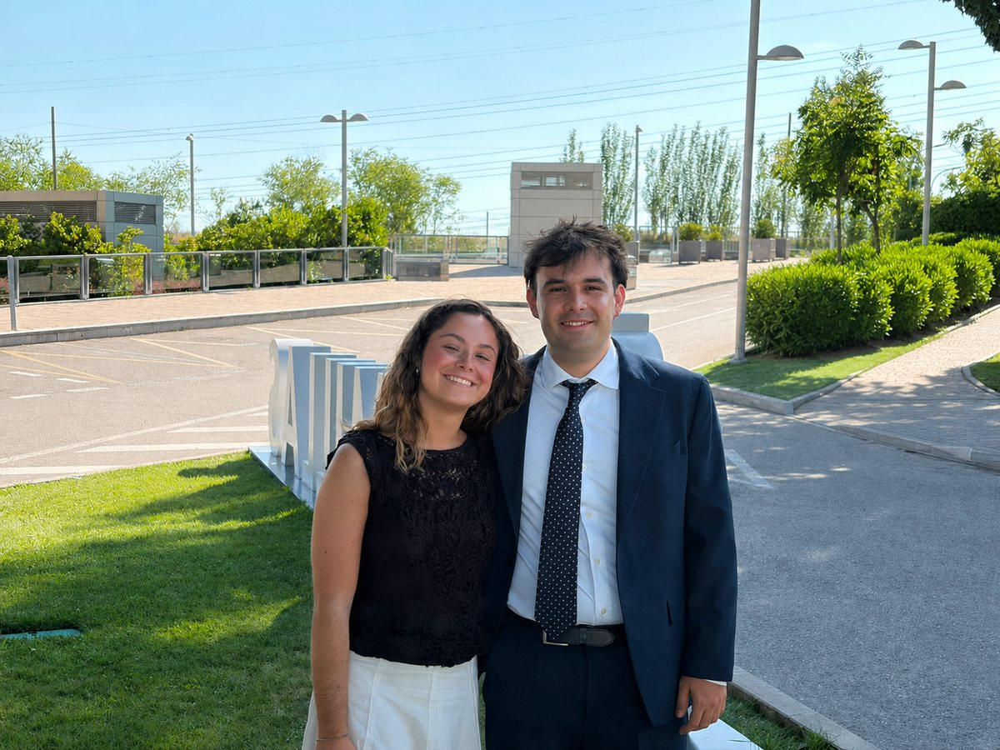

Lead scoring y asistente RAG
Modelado predictivo · IA aplicada · 2026
Hola, soy
El 96% de las entregas trabajando el 30% de los leads.
Analista de marketing y datos. Construí el sistema de lead scoring del CRM de admisiones de la Universidad Pontificia Comillas como trabajo de fin de máster. Vengo de marketing, y por eso el modelo devuelve A, B o C en vez de una probabilidad con cuatro decimales: un comercial no llama a un 0,7413.
Cómo se tocan los trabajos
Pasa el ratón por un nodo para encender lo que comparte, arrástralo si te apetece, y pulsa un proyecto para abrir su página.
El mapa necesita ratón y sitio para leerse. Los siete proyectos están justo debajo.
01 · Trabajo seleccionado
Coger datos reales, sacar de ellos una decisión que alguien pueda tomar el lunes, y decir con la misma claridad qué funciona y qué no.
Modelado predictivo · IA aplicada · 2026

Aprendizaje por refuerzo · Método experimental · 2026

Aprendizaje supervisado · 2026

Deep learning · Series temporales · 2026

Datos no estructurados · PLN · 2026

Estrategia de marca · 2024

Análisis exploratorio · 2026
Cada proyecto tiene su página: cómo se planteó, qué salió y, sobre todo, qué no salió. La memoria del TFM lleva datos del CRM de Comillas y no puede circular, así que esa la enseño en persona.
02 · Con qué trabajo
Datos
Visualización
IA aplicada
Marketing digital
Idiomas
03 · Experiencia
Ese orden explica por qué el modelo devuelve A, B o C en lugar de una probabilidad: he estado del lado del que tiene que coger el teléfono.

Colaboración para llevar a producción el sistema de lead scoring y el asistente RAG del trabajo de fin de máster, esta vez con los datos oficiales del CRM de admisiones. Trabajo con datos reales y confidenciales, con las restricciones que eso impone.
Investigación de competencia y de mercado, diseño de campañas de captación y creación de contenido para redes. También los materiales de promoción y comunicación de los proyectos emprendedores del programa.
Agencia cofundada durante el Erasmus. Campaña publicitaria online completa para un cliente real, Slijterij56: estrategia, contenido y gestión de redes, de principio a fin.
Gestión de inventarios y apoyo en operaciones logísticas, en un entorno internacional y en inglés, compaginado con el intercambio.
04 · Formación
05 · Sobre mí
Vengo de marketing. Estudié el grado en ESIC, me fui de Erasmus a Países Bajos y allí cofundé una agencia con la que llevamos una campaña entera para un cliente real. Sé lo que cuesta traer a alguien, y sé lo que se siente cuando la lista de contactos es larga y el tiempo corto.
El máster en Business Analytics vino después, y por eso lo uso de otra forma. Cuando construí el sistema de lead scoring para Comillas, la decisión importante no fue qué modelo entrenar: fue que la salida tenía que ser A, B o C, y no una probabilidad con cuatro decimales. Un comercial no llama a un 0,7413. Llama a los de la lista A.
Los problemas que más disfruto son los que terminan en una decisión concreta: a quién llamar, qué campaña parar, dónde no merece la pena insistir. Por eso trabajo con SHAP y no solo con métricas: si quien tiene que usar el modelo no entiende por qué prioriza un contacto, no lo va a usar.
Busco un sitio donde esas dos cosas cuenten a la vez: entender el embudo antes de modelarlo, y saber explicar el modelo a quien tiene que tomar la decisión.
Estoy en Madrid y disponible desde ya. Escríbame o llámeme y le cuento el proyecto con calma.